Word SpreadSheet: Spreadsheet (Worksheet) is application which is made of rows and column that help calculate numerical data, arrange data,sort data etc. Spreadsheets consist of a number of individual sheets, each sheet containing cells arranged in rows and columns. Here, One or more Spreadsheet (Worksheet) is known as workbook.
Calc : Calc is the spreadsheet component of LibreOffice. You can enter data (usually numerical) in a spreadsheet and then manipulate this data to produce certain results.
Cell : A particular cell is identified by its row number and column letter.
Eg. : First Cell Name is : A1 and Last Cell Name is XFD1048576.
Cells hold the individual elements text, numbers, formulas, and so on that make up the data to display and manipulate.
Each spreadsheet can have up to 10,000 sheets and each sheet can have a maximum of 1,048,576 rows and 16,384 columns (XFD).
Note: When you save a calc file the by default file name is: Untitled 1 and extension name is : (.ods ) OpenDocument SpreadSheet.
Title bar :The Title bar is located at the top of the Calc window. It shows the file name of the current document. When the document is not yet named, the document name will appear as Untitled X, where X is a number. Untitled documents are numbered in the order in which they are created. Eg: Untitled 1
Menu bar : The Menu bar is located just below the Title bar. Menu bar contains File Menu, Edit Menu, View Menu, Insert Menu etc.
Standard Toolbar: This toolbars to give users quick access to different features and tools with contains a wide variety of icons. We can access quickly such as Create new,open, save a file etc.
Formatting Toolbar: This toolbars contains commands for formatting such as font size, style, color, etc and it gives the quick access with a variety of icons.
Sidebar: The Sidebar is normally open by default on the right side of the Writer window. It is the section of properties.
Status bar:The Writer Status bar is located at the bottom of the workspace. It provides information about the document and convenient ways to quickly change some document features.
Active Cell : The rectangular box that hightlight in color the cell in sheet is known as active cell, it help in identify on which cell we are working, where data will be entered.
Name Box : It gives the current active cell reference using a combination of a letter and number, for example A1
Note :You can enter formulas in two ways. A formula must begin with an = symbol in both method.
| Without Formula | With Formula |
|---|---|
| It is used to type directly into the cell. | By using Function Wizard. |
| Eg: = 10+20 Press Enter result is: 30 |
Eg: = sum(10+20) Press Enter result is: 30 |
Common ways to use formulas
= A1 + 20 : It displays the result of cell A1 and plus 20.
= A1 + (2+3) : First it add 2+3 which is in bracket and then Plus A1.
= (2+2)+ A1 : First it add 2+2 which is in bracket and then plus A1.
| Operator | Name | Example | Result |
|---|---|---|---|
| + (Plus) | Addition | = 1+1 | 2 |
| – (Minus) | Subtraction | = 2–1 | 1 |
| – (Minus) | Negation | = –5 | -5 |
| * (Asterisk) | Multiplication | = 2*2 | 4 |
| / (Slash) | Division | = 10/5 | 2 |
| % (Percent) | Percent | = 100*25% | 25 |
| ^ (Caret) | Exponentiation | = 2^3 | 8 |
LabWork:
| Operator | Name | Example | Result (A1=4,B1=5) |
|---|---|---|---|
| = | Equal | A1=B1 | FALSE |
| > | Greater than | A1>B1 | FALSE |
| < | Less than | A1<B1 | TRUE |
| >= | Greater than or equal to | A1>=B1 | FALSE |
| <= | Less than or equal to | A1<=B1 | TRUE |
| <> | Inequality | A1<>B1 | TRUE |
Labwork: If A1=7, B1=9
The operator combines separate texts into one text.
| Operator | Name | Example | Result |
|---|---|---|---|
| & (And) | text concatenation AND | = "Sun" & "day" | Sunday |
| Example | Result (OUTPUT) |
|---|---|
| 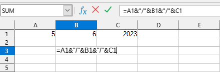 | 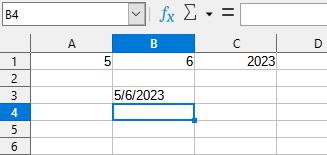 |
Labwork:
These operators return a cell range of cells.
Syntax:reference upper left : reference lower right
Note :When you selected area of the cells or give the range of the cell then only the given range or selected area is filled.
| Press this key | To do this |
|---|---|
| Ctrl + A or Ctrl + Shift + Space | Select All |
| Shift + Space | Select Row |
| Ctrl + Space | Select Column |
| Ctrl + * | Select Data area (When data in range) or Select Self cell (When data is not in range) |
| Ctrl + F2 | To Open Function Wizard |
| Ctrl + ` | To Show Formula |
| Ctrl + ; | Insert Date |
| Ctrl + Shift + ; | Insert Time |
Note :When you enter any text or string in Cell by default alignment is Left.
Note :When you enter Number, Date , Time in Cell by default alignment is Right.
Que: What is Cell address and Cell Reference ?
Ans: A reference is a cell's address. It identifies a cell or range of cells by referring to the column letter and row number of the cell(s). For example, A1 refers to the cell at the intersection of column A and row 1.
The cell in column A, row 1 is addressed as A1. When you address a range of cell by entering the address of upper left cell, then then a colon (:) and then entering the address of lower right cell.
Note : By addressing an area in this way, you are making a relative reference to A1:C1
Absolute referencing is the opposite of relative addressing. A dollar sign is placed before each letter and number in an absolute reference, for example, $A$1:$B$2 .
Note:- When we make the combination of relative cell reference and absolute cell reference. Example : $A1 , A$1
Function:
A function is a predefined calculation entered in a cell to help you analyze or manipulate data in a spreadsheet.
Function syntax:
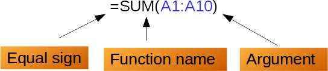Arguments in functions:
Arguments must be enclosed in parentheses. Multiple arguments within parentheses are separated with a semicolon (;).
The function Wizard :
The Functions Wizard is a tool that helps us first to find the function we want through the library and secondly to introduce the arguments step-by-step and with the correct syntax. The f(x) button on the Formula bar to open the Function Wizard.
Basic Functions:
1. SUM : Adds all the numbers in a range of cells.
Syntax:
SUM(number1; number2;...number30)
Note: SUM ignores any text or empty cell within a range or array.
Examples:
SUM(2; 3; 4)
returns 9, because 2+3+4 = 9.
SUM(B1:B3)
(where cells B1, B2, B3 contain 5, 4, 3) returns 12.
2. AVERAGE:Returns the average of the arguments, it ignoring text.
Syntax:
AVERAGE(number1; number2; ... number30)
Examples:
AVERAGE(2; 6; 4)
returns 4, the average of the three numbers in the list.
AVERAGE(B1:B3)
where cells B1, B2, B3 contain 1, 3, and apple returns 2, the average of 1 and 3. Text is ignored.
3. COUNT :Counts the numbers in the list of arguments, ignoring text entries.
Syntax:
COUNT(value1; value2; ... value30)
Examples:
COUNT(2; 4; 6; "eight")
returns 3, because 2, 4 and 6 are numbers ("eight" is text).
COUNT(B1:B3)
where cells B1, B2, B3 contain 1, 3, and apple returns 2.
4. MAX: Returns the maximum of a list of arguments, ignoring text entries.
Syntax:
MAX(number1; number2; ... number30)
Examples:
MAX(2; 6; 4)
returns 6, the largest value in the list.
MAX(B1:B3)
where cells B1, B2, B3 contain 7, 4, and apple returns 7
5. MIN : Returns the minimum of a list of arguments, ignoring text entries.
Syntax:
MIN(number1; number2; ... number30)
Example:
MIN(2; 6; 4)
returns 2, the smallest value in the list.
6. CONCATENATE:Combines several text strings into one string.
Syntax:
CONCATENATE(text1; text2; ... text30)
Examples:
CONCATENATE("al"; "tog"; "ether")
returns altogether.
Note:The ampersand (&) operator & may also be used to concatenate text in a formula, without the function.
"al" & "tog" & "ether"
also returns altogether.
7. IF Function: IF performs a logical test and return one value for a TRUE result, and another for a FALSE result.
IF(Something is True, then return value1, otherwise return value2)
Syntax :
IF(test; value1; value2)
Examples:
IF(age>=18;"You are able to vote";"You are not able to vote")
Next Example:
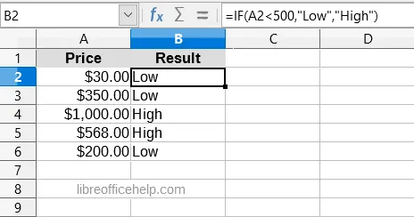Nested IF
"Nesting" is defined as the method of combining multiple functions in one formula. When two or more IF statements combine and form one single formula, this is known as nested IF statements.
Syntax of Nested IF:
IF(logical_test1, output1,IF(logical_test2, output2, IF(logical_test2, output3, output4)))
Example of Nested If:
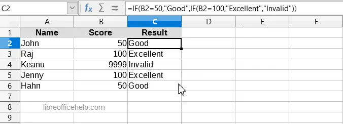8. ABS Function:Returns the absolute value of a number.
Syntax :
ABS(Number)
Number is the number whose absolute value is to be calculated. The absolute value of a number is its value without the +/- sign.
Example:
=ABS(-56) returns 56.
=ABS(12) returns 12.
=ABS(0) returns 0.
9. MOD Function: Returns the remainder when one integer is divided by another.
Syntax:
MOD(Dividend; Divisor)
For integer arguments this function returns Dividend modulo Divisor, that is the remainder when Dividend is divided by Divisor.
Example
=MOD(22;3) returns 1, the remainder when 22 is divided by 3.
10. POWER Function: Returns a number raised to another number.
Syntax:
POWER(Base; Exponent)
Returns Base raised to the power of Exponent.
The same result may be achieved by using the exponentiation operator ^: Base^Exponent
Note: =POWER(0,0) returns 1.
Example:
=POWER(4;3) returns 64, which is 4 to the power of 3.
=4^3 also returns 4 to the power of 3.
11. PRODUCT Function: Multiplies all the numbers given as arguments and returns the product.
Syntax :
PRODUCT(Number 1 [; Number 2 [; … [; Number 255]]])
Example:
=PRODUCT(2;3;4) returns 24.
12. Round Function: Rounds a number to a certain number of decimal places.
Syntax:
ROUND(Number ; Decimal Place )
Example:
=ROUND(2.348;2) returns 2.35
=ROUND(-32.4834;3) returns -32.483. Change the cell format to see all decimals.
=ROUND(2.348;0) returns 2.
=ROUND(2.5) returns 3.
=ROUND(987.65;-2) returns 1000.
13. ROUNDUP : Rounds a number up, away from zero, to a certain precision.
Syntax:
ROUNDUP(Number ; Decimal Place)
Example:
=ROUNDUP(1.1111;2) returns 1.12.
=ROUNDUP(1.2345;1) returns 1.3.
=ROUNDUP(45.67;0) returns 46.
=ROUNDUP(-45.67) returns -46.
=ROUNDUP(987.65;-2) returns 1000.
14. ROUNDDOWN Function : Rounds down a number while keeping a specified number of decimal digits.
Syntax:
ROUNDDOWN(Number ; Count)
Example :
=ROUNDDOWN(21.89) returns 21. Note that this example uses the default value for Count which is 0.
=ROUNDDOWN(103.37,1) returns 103.3.
=ROUNDDOWN(0.664,2) returns 0.66.
=ROUNDDOWN(214.2,-1) returns 210. Note the negative value for Count, which causes the first integer value before the decimal separator to be rounded towards zero.
15. TRUNC function : Truncates a number while keeping a specified number of decimal digits.
Note : ROUNDDOWN and TRUNC are same but name is different.
Syntax:
TRUNC(Number ; Count)
Example :
=TRUNC(21.89) returns 21. Note that this example uses the default value for Count which is 0.
=TRUNC(103.37,1) returns 103.3.
=TRUNC(0.664,2) returns 0.66.
=TRUNC(214.2,-1) returns 210. Note the negative value for Count, which causes the first integer value before the decimal separator to be rounded towards zero.
16. SQRT Function : Returns the positive square root of a number.
Syntax :
SQRT(Number) :
Returns the positive square root of Number. Number must be positive.
Example :
=SQRT(16) returns 4.
=SQRT(-16) returns an invalid argument error.
17. SIGN Function:Returns the sign of a number. Returns 1 if the number is positive, -1 if negative and 0 if zero.
Syntax :
SIGN(Number)
Number is the number whose sign is to be determined.
Example :
=SIGN(3.4) returns 1.
=SIGN(-4.5) returns -1.
18. CEILING Function : Rounds a number to the nearest multiple of a significance value.
Syntax :
CEILING(Number ; Mode)
Example :
=CEILING(3.45) returns 4.
=CEILING(3.45; 3) returns 6.
=CEILING(-1.234) returns -1.
18. FLOOR Function : Rounds a number to the nearest multiple of a significance value.
Syntax :
FLOOR(Number ; Mode)
Example :
=FLOOR(3.45) returns 3.
=FLOOR(3.45, 3) returns 3.
=FLOOR(-1.234) returns -2.
19. LOWER Function : Converts all uppercase letters in a text string to lowercase.
Syntax :
LOWER("Text")
Text refers to the text to be converted.
Example :
=LOWER("Sun") returns sun.
20. UPPER Function : Converts the string specified in the text field to uppercase.
Syntax :
UPPER("Text")
Text refers to the lower case letters you want to convert to upper case.
Example :
=UPPER("Good Morning") returns GOOD MORNING.
21. PROPER Function : Capitalizes the first letter in all words of a text string.
Syntax :
PROPER("Text")
Text refers to the text to be converted.
Example :
=PROPER("the document foundation") returns The Document Foundation
22. LEFT Function :Returns the first character or characters of a text.
Syntax :
LEFT("Text" ; Number)
Example :
=LEFT("output";3) returns “out”.
23. RIGHT Function : Returns the last character or characters of a text.
Syntax :
RIGHT("Text" ; Number)
Example :
=RIGHT("Sun";2) returns un.
24. MID Function : Returns a text string of a text. The parameters specify the starting position and the number of characters.
Syntax :
MID("Text"; Start; Number)
Text is the text containing the characters to extract.
Start is the position of the first character in the text to extract.
Number specifies the number of characters in the part of the text.
Example :
=MID("office";2;2) returns ff.
25. LEN Function : Returns the length of a string including spaces.
Syntax :
LEN("Text")
Text is the text whose length is to be determined.
Example :
=LEN("Good Afternoon") returns 14.
=LEN(12345.67) returns 8.
26. REPT Function : Repeats a character string by the given number of copies.
Syntax :
REPT("Text"; Number)
Text is the text to be repeated.
Number is the number of repetitions.
Example :
=REPT("Good morning";2) returns Good morningGood morning.
27. COUNTA Function : Counts how many values are in the list of arguments. Text entries are also counted, even when they contain an empty string of length 0. If an argument is an array or reference, empty cells within the array or reference are ignored
Syntax :
COUNTA(Number 1 ; Number 2 ; … ; Number 255)
Number 1, Number 2, … , Number 255 are numbers, references to cells or to cell ranges of numbers.
Example :
=COUNTA(2;4;6;"eight")
Result is 4.
28. COUNTBLANK : Returns the number of empty cells.
Syntax :
COUNTBLANK(Range)
Returns the number of empty cells in the cell range Range.
Example :
=COUNTBLANK(A1:B2) returns 4 if cells A1, A2, B1, and B2 are all empty.
29. COUNTIF Function: Returns the total number of cells that meet with certain criteria within a cell range.
Syntax :
COUNTIF(Range; Criteria)
Range: Range is the range to which the criterion is to be applied.
Criteria: A Criteria is a single cell Reference, Number or Text. It is used in comparisons with cell contents.
Example :
A1:A10 is a cell range containing the numbers 2000 to 2009. Cell B1 contains the number 2006. In cell B2, you enter a formula:
=COUNTIF(A1:A10;2006) - this returns 1.
=COUNTIF(A1:A10;B1) - this returns 1.
=COUNTIF(A1:A10;">=2006") - this returns 4
30. COUNTIFS Function:Returns the count of cells that meet criteria in multiple ranges.
Syntax :
COUNTIFS(Range1; Criteria1; Range2; Criteria2; ... )
Range: It is a range of cells, a name of a named range, or a label of a column or a row, to which the corresponding criterion is to be applied.
Criteria: A criteria is a single cell Reference, Number or Text. It is used in comparisons with cell contents.
Example :
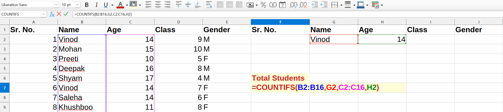31. SUMIF Function: This function is used to sum a range when you search for a certain value.
Syntax :
SUMIF(Range; Criteria; SumRange)
Range: Range is the range to which the criterion is to be applied.
Criteria: A Criteria is a single cell Reference, Number or Text. It is used in comparisons with cell contents.
SumRange: It is the given range which you want sum.
Example:
32. SUMIFS Function : Returns the sum of the values of cells in a range that meets multiple criteria in multiple ranges.
Syntax:
SUMIF(SumRange,Criteria1_Range1,Criteria1,Criteria2_Range2,Criteria2,...)
Example :
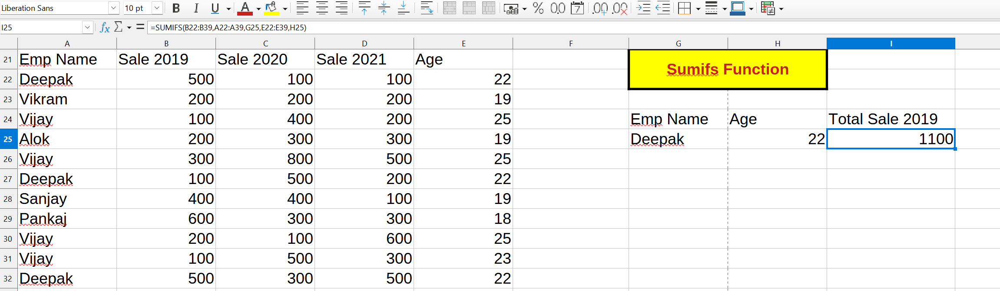33. DSUM Function:DSUM calculates the sum of all numeric values in the cells (fields) of the specified column, for all rows (database records) that match the specified search criteria.
Syntax :
DSUM(Database; DatabaseField; SearchCriteria)
Example :
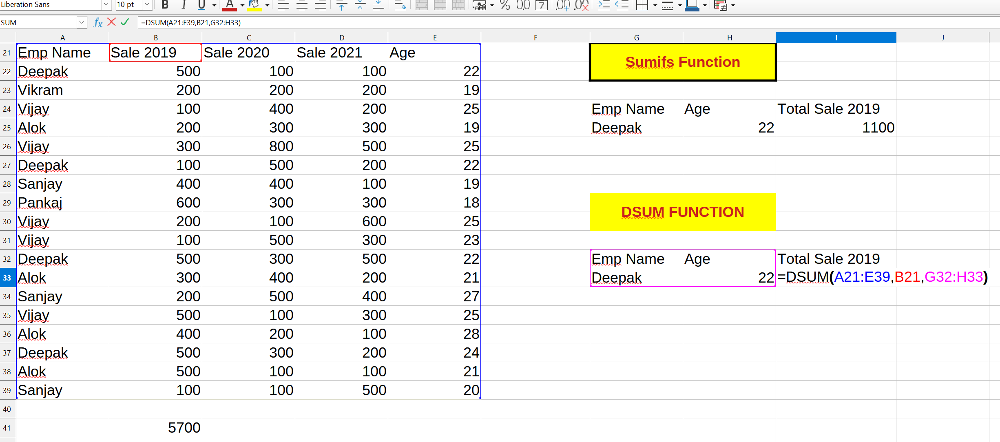34. DAVERAGE Function : DAVERAGE calculates the average of the numeric values in the cells (fields) of the specified column, for all rows (database records) that match the specified search criteria.
Syntax :
DAVERAGE(Database; DatabaseField; SearchCriteria)
Example :
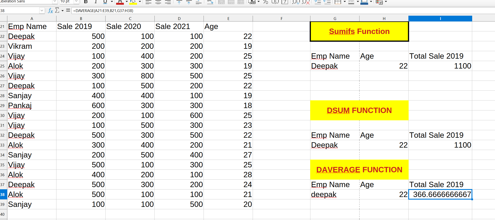35. DMIN Function : DMIN calculates the minimum value across the cells (fields) of the specified column that contain numeric values, for all rows (database records) that match the specified search criteria.
Syntax :
DMIN(Database; DatabaseField; SearchCriteria)
Example :
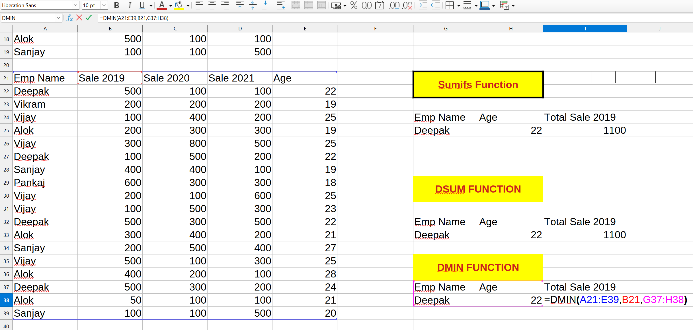36. DMAX Function : DMAX calculates the maximum value across the cells (fields) of the specified column that contain numeric values, for all rows (database records) that match the specified search criteria.
Syntax :
DMAX(Database; DatabaseField; SearchCriteria)
Example :
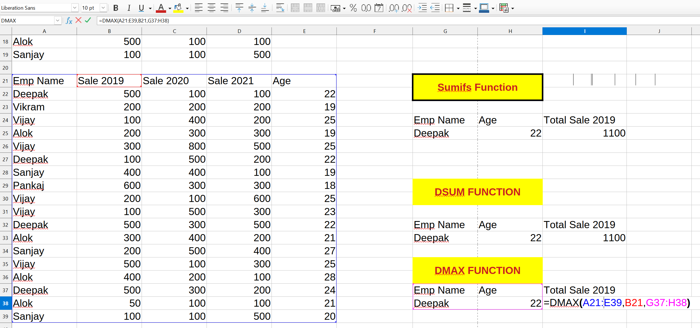37. DCOUNT Function : DCOUNT counts the number of cells (fields) of the specified column that contain numeric values, for all rows (database records) that match the specified search criteria
Syntax :
DMAX(Database; DatabaseField; SearchCriteria)
Example :
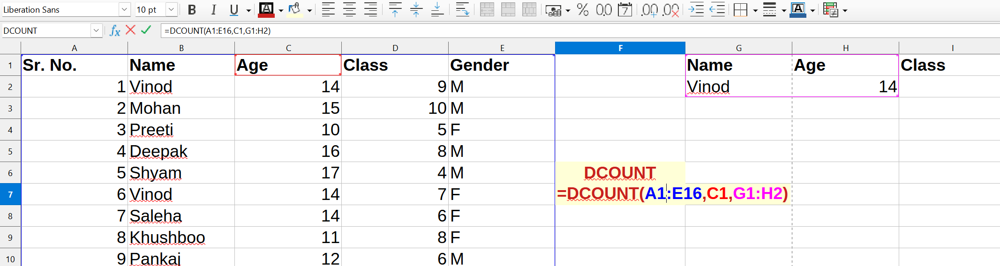38. DCOUNTA Function : DCOUNTA counts the number of cells (fields) of the specified column that are not blank, for all rows (database records) that match the specified search criteria
Syntax :
DMAX(Database; DatabaseField; SearchCriteria)
Example :
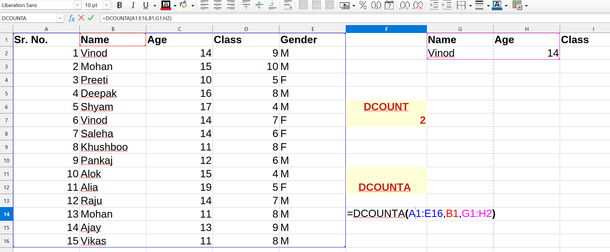39. FACT Function :Returns the factorial of a number.
Syntax :
FACT(Number)
Returns Number!, the factorial of Number, calculated as 1*2*3*4* ... * Number.
=FACT(0) returns 1 by definition.
The factorial of a negative number returns the "invalid argument" error.
Example:
=FACT(3) returns 6.
=FACT(0) returns 1.
40. QUOTIENT Function :
Returns the integer part when Numerator divided by Denominator.
Syntax :
QUOTIENT(Numerator; Denominator)
Example :
=QUOTIENT(11;3) returns 3. The remainder of 2 is lost.
Sorting : Sorting within Calc arranges the cells in a sheet using the sort criteria that you specify.
I. Quick sort ascending : To quickly sort a column in ascending order.
1. Select any cell inside the column
2. Click the Sort Ascending button.
II. Quick sort descending : To quickly sort a column in descending order.
1. Select any cell inside the column
2. Click the Sort descending button.
III. The Sort window :
For advanced sorting you must use the Sort command that brings the Sort Window. Using this command you can specify multiple levels of sorting and advanced options.
Below the data is not sorted.
For example we can set sorting by Last Name, First Name and Country.
After data sort you can see the result.
When a sheet contains a large amount of data, it can be difficult to find information quickly. In that case Filters can be used to narrow down the data in your worksheet, allowing you to view only the information you need.
Calc provides three types of filter:
1. AutoFilter (CTRL + SHIFT + L): Automatically filters the selected cell range and creates one-row list boxes where you can choose the items that you want to display.
Create an AutoFilter : To create an AutoFilter simply click on the AutoFilter Button. A drop-down arrow will appear in the header cell for each column.
2. Standard : specifies the logical conditions to filter your data.
Steps of Standard Filter:
Step 1: Select all your data.
Step 2: Data Menu -> More Filter -> Standard Filter.
Step 3: Give your condition -> OK
3. Advanced : uses filter criteria from specified cells.
Step 1: Copy and paste your data heading anywhere in sheet.
Step 2: Enter data wh you want to filter and Select all your main data.
Step 3: Data Menu -> More Filter -> Advanced Filter.
Step 4: Select the entered data with your Heading and press Enter button.
Steps for Subtotal:
Step 1: Select all your data.
Step 2: Data Menu-> Subtotal
Step 3: Choose your group in (Group by)
Step 4: Tick the field which you want to calculate the Subtotal.
Step 5: Select the (Sum) from use function. Press OK Button.
A or a graph is simply a visualization of spreadsheet data. A chart can create a clear picture of a set of data and allow users to better understand the results and see patterns inside the data.
Some basic types of charts:
1. Column Chart : The column chart is suitable for viewing changes in data over a period of time and comparing them. In the diagrams, data series are usually organized along the horizontal X axis and the values along the vertical Y axis.
2. Bar Chart : Displays values for one or more series using horizontal columns. In a bar chart, the categories are typically organized along the vertical axis, and the values along the horizontal axis.
3. Pie Chart : Pie charts make it easy to compare proportions. Each value is shown as a slice of the pie, so it's easy to see which values make up the percentage of a whole.
4. Line Chart : Displays values as equally spaced points connected with a line. This chart is most useful displaying trends over time or other ordered category for single or multiple data series.
Opens a dialog where you can solve an equation with a variable. After a successful search, a dialog with the results opens, allowing you to apply the result and the target value directly to the cell.
Example :